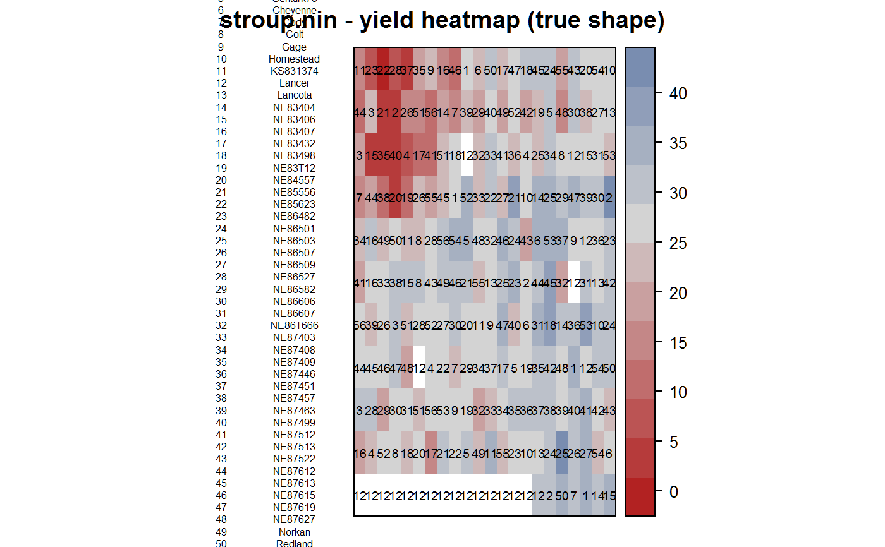
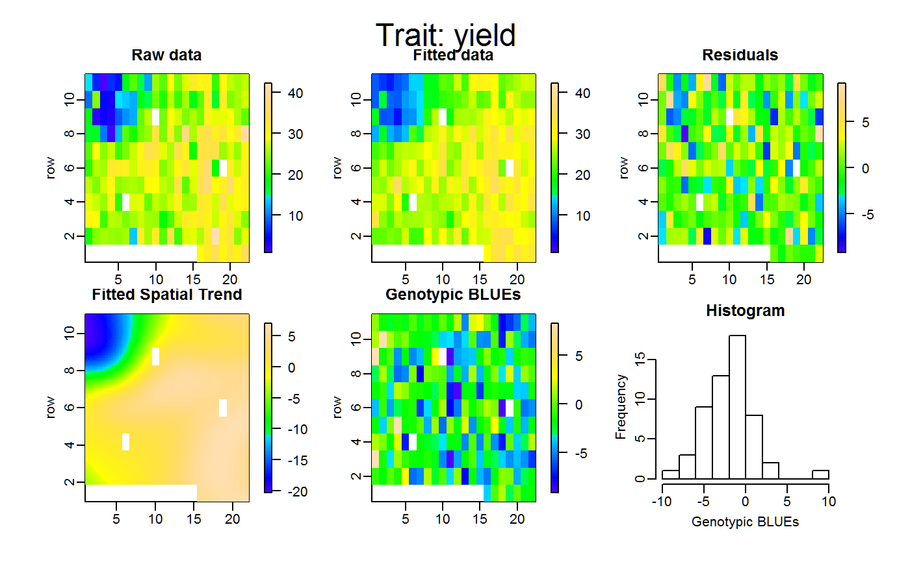
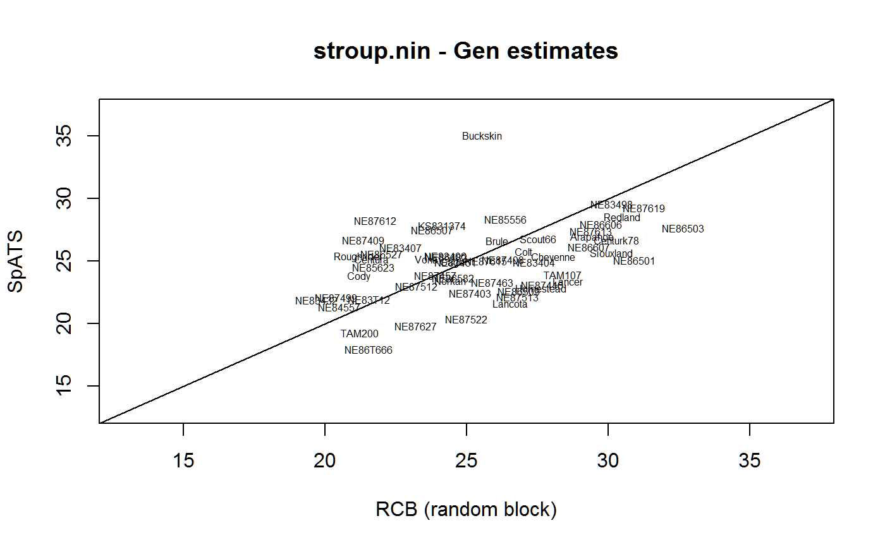
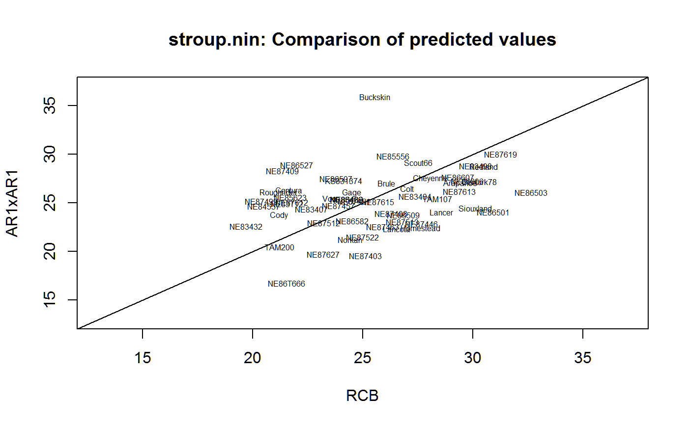

stroup.nin.RdThe yield data from an advanced Nebraska Intrastate Nursery (NIN) breeding trial conducted at Alliance, Nebraska, in 1988/89.
genotype, 56 levels
replicate, 4 levels
yield, bu/ac
column
row
Four replicates of 19 released cultivars, 35 experimental wheat lines and 2 additional triticale lines were laid out in a 22 row by 11 column rectangular array of plots. The varieties were allocated to the plots using a randomised complete block (RCB) design. Each plot was sown in four rows 4.3 m long and 0.3 m apart. Plots were trimmed down to 2.4 m in length before harvest. The orientation of the plots is not clear from the paper, but the data in Littel et al are given in meters and make the orientation clear.
Field length: 11 plots * 4.3 m = 47.3 m
Field width: 22 plots * 1.2 m = 26.4 m
All plots with missing data are coded as being gen = "Lancer". (For ASREML, missing plots need to be included for spatial analysis and the level of 'gen' needs to be one that is already in the data.)
These data were first analyzed by Stroup et al (1994) and subsequently by Littell et al (1996, page 321), Pinheiro and Bates (2000, page 260), and Butler et al (2004).
This version of the data give the yield in bushels per acre. The yield values published in Stroup et al (1994) are expressed in kg/ha. For wheat, 1 bu/ac = 67.25 kg/ha.
Some of the gen names are different in Stroup et al (1994). (Sometimes an experimental genotype is given a new name when it is released for commercial use.) At a minimum, the following differences in gen names should be noted:
| stroup.nin | Stroup et al |
| NE83498 | Rawhide |
| KS831374 | Karl |
Some published versions of the data use long/lat instead of col/row. To obtain the correct value of 'long', multiply 'col' by 1.2. To obtain the correct value of 'lat', multiply 'row' by 4.3.
Relatively low yields were clustered in the northwest corner, which is explained by a low rise in this part of the field, causing increased exposure to winter kill from wind damage and thus depressed yield. The genotype 'Buckskin' is a known superior variety, but was disadvantaged by assignment to unfavorable locations within the blocks.
Note that the figures in Stroup 2002 claim to be based on this data, but the number of rows and columns are both off by 1 and the positions of Buckskin as shown in Stroup 2002 do not appear to be quite right.
Stroup, Walter W., P Stephen Baenziger, Dieter K Mulitze (1994) Removing Spatial Variation from Wheat Yield Trials: A Comparison of Methods. Crop Science, 86:62--66. http://doi.org/10.2135/cropsci1994.0011183X003400010011x
Littell, R.C. and Milliken, G.A. and Stroup, W.W. and Wolfinger, R.D. 1996. SAS system for mixed models, SAS Institute, Cary, NC.
Jose Pinheiro and Douglas Bates, 2000, Mixed Effects Models in S and S-Plus, Springer.
Butler, D., B R Cullis, A R Gilmour, B J Goegel. (2004) Spatial Analysis Mixed Models for S language environments
W. W. Stroup (2002). Power Analysis Based on Spatial Effects Mixed Models: A Tool for Comparing Design and Analysis Strategies in the Presence of Spatial Variability. Journal of Agricultural, Biological, and Environmental Statistics, 7(4), 491-511. http://doi.org/10.1198/108571102780
Identical data (except for the missing values) are available
in the nlme package as Wheat2.
library(agridat) data(stroup.nin) dat <- stroup.nin # Experiment layout. All "Buckskin" plots are near left side libs(desplot) desplot(yield~col*row, dat, aspect=47.3/26.4, out1="rep", num=gen, cex=0.6, # true aspect main="stroup.nin - yield heatmap (true shape)")# ----- nlme ----- libs(nlme) # Random RCB model lme1 <- lme(yield ~ 0 + gen, random=~1|rep, data=dat, na.action=na.omit) # Linear (Manhattan distance) correlation model lme2 <- gls(yield ~ 0 + gen, data=dat, correlation = corLin(form = ~ col + row, nugget=TRUE), na.action=na.omit) # Random block and spatial correlation. # Note: corExp and corSpher give nearly identical results lme3 <- lme(yield ~ 0 + gen, data=dat, random = ~ 1 | rep, correlation = corExp(form = ~ col + row), na.action=na.omit) AIC(lme1,lme2,lme3) # lme2 is lowest#> df AIC #> lme1 58 1333.702 #> lme2 59 1189.135 #> lme3 59 1216.704## df AIC ## lme1 58 1333.702 ## lme2 59 1189.135 ## lme3 59 1216.704 # Compare the estimates from the two methods eff = data.frame(ranblock=fixef(lme1), corLin = coef(lme2), corExp = fixef(lme3)) rownames(eff) <- gsub("gen", "", rownames(eff)) plot(eff$ranblock, eff$corLin, xlim=c(13,37), ylim=c(13,37), main="stroup.nin - Gen estimates (intercepts differ)", xlab="RCB (random block)", ylab="corLin",type='n')#> #>#> #> #>#> #> #>dat <- transform(dat, yf = as.factor(row), xf = as.factor(col)) sp1 <- SpATS(response = "yield", spatial = ~ SAP(col, row, nseg = c(10,20), degree = 3, pord = 2), genotype = "gen", #fixed = ~ colcode + rowcode, random = ~ yf + xf, data = dat, control = list(tolerance = 1e-03))#> Effective dimensions #> ------------------------- #> It. Deviance yf xff(col,row)|colf(col,row)|row #> 1 2608.971235 0.495 1.195 10.143 13.395 #> 2 738.685475 0.228 1.592 9.461 12.400 #> 3 738.061019 0.128 2.053 9.192 11.898 #> 4 737.719349 0.082 2.560 9.110 11.663 #> 5 737.485972 0.056 3.090 9.110 11.567 #> 6 737.314054 0.040 3.611 9.144 11.541 #> 7 737.188760 0.029 4.098 9.189 11.550 #> 8 737.101522 0.022 4.527 9.234 11.574 #> 9 737.044016 0.017 4.889 9.274 11.602 #> 10 737.008035 0.013 5.183 9.307 11.629 #> 11 736.986502 0.010 5.413 9.334 11.654 #> 12 736.974058 0.007 5.588 9.355 11.674 #> 13 736.967044 0.006 5.720 9.372 11.690 #> 14 736.963152 0.004 5.817 9.385 11.702 #> 15 736.961005 0.003 5.887 9.395 11.712 #> 16 736.959818 0.003 5.938 9.402 11.720 #> 17 736.959154 0.002 5.975 9.408 11.725 #> Timings: #> SpATS 0.33 seconds #> All process 0.39 secondsplot(sp1)eff <- cbind(eff, spats=predict(sp1, which="gen")$predicted.values) plot(eff$ranblock, eff$spats, xlim=c(13,37), ylim=c(13,37), main="stroup.nin - Gen estimates", xlab="RCB (random block)", ylab="SpATS",type='n')# ---------------------------------------------------------------------------- # TMB = Template Model Builder could do this. See the ar1xar1 example: # https://github.com/kaskr/adcomp/tree/master/TMB/inst/examples # This example uses dpois() in the cpp file to model a Poisson response # with separable AR1xAR1. I think this example could be used for the # stroup.nin data, changing dpois() to something Normal. # ---------------------------------------------------------------------------- # asreml3 libs(asreml) # RCB analysis dat.rcb <- asreml(yield ~ gen, random = ~ rep, data=dat, na.method.X="omit")#> ASReml: Fri Aug 16 15:02:19 2019 #> #> LogLik S2 DF wall cpu #> -454.8069 50.3285 168 15:02:19 0.0 #> -454.6631 50.1197 168 15:02:19 0.0 #> -454.5323 49.8682 168 15:02:19 0.0 #> -454.4718 49.6374 168 15:02:19 0.0 #> -454.4691 49.5854 168 15:02:19 0.0 #> -454.4691 49.5824 168 15:02:19 0.0 #> -454.4691 49.5824 168 15:02:19 0.0 #> #> Finished on: Fri Aug 16 15:02:19 2019 #> #> LogLikelihood Converged#> ASReml: Fri Aug 16 15:02:20 2019 #> #> LogLik S2 DF wall cpu #> -454.4691 49.5824 168 15:02:20 0.0 #> -454.4691 49.5824 168 15:02:20 0.0 #> -454.4691 49.5824 168 15:02:20 0.0 #> -454.4691 49.5824 168 15:02:20 0.0 #> #> Finished on: Fri Aug 16 15:02:20 2019 #> #> LogLikelihood Converged# Two-dimensional AR1xAR1 spatial model dat <- transform(dat, xf=factor(col), yf=factor(row)) dat <- dat[order(dat$xf, dat$yf),] dat.sp <- asreml(yield~gen, data=dat, rcov=~ar1(xf):ar1(yf), na.method.X='ignore')#> ASReml: Fri Aug 16 15:02:20 2019 #> #> LogLik S2 DF wall cpu #> -449.8184 49.7753 168 15:02:20 0.0 #> -424.2977 40.2289 168 15:02:20 0.0 #> -405.4111 38.9239 168 15:02:20 0.0 #> -399.5515 45.6023 168 15:02:20 0.0 #> -399.3356 47.9863 168 15:02:20 0.0 #> -399.3245 48.5462 168 15:02:20 0.0 #> -399.3238 48.6725 168 15:02:20 0.0 #> -399.3238 48.7026 168 15:02:20 0.0 #> #> Finished on: Fri Aug 16 15:02:20 2019 #> #> LogLikelihood Converged#> ASReml: Fri Aug 16 15:02:20 2019 #> #> LogLik S2 DF wall cpu #> -399.3238 48.7102 168 15:02:20 0.0 #> -399.3238 48.7108 168 15:02:20 0.0 #> -399.3238 48.7116 168 15:02:20 0.0 #> -399.3238 48.7125 168 15:02:20 0.0 #> #> Finished on: Fri Aug 16 15:02:20 2019 #> #> LogLikelihood Converged#> effect component std.error z.ratio constr #> R!variance 48.7 7.155 6.8 P #> R!xf.cor 0.6555 0.05638 12 U #> R!yf.cor 0.4375 0.0806 5.4 U## effect component std.error z.ratio constr ## R!variance 48.7 7.155 6.8 pos ## R!xf.cor 0.6555 0.05638 12 unc ## R!yf.cor 0.4375 0.0806 5.4 unc # Compare the estimates from the two methods plot(pred.rcb$pvals[,2], pred.sp$pvals[,2], xlim=c(13,37), ylim=c(13,37), xlab="RCB",ylab="AR1xAR1",type='n')title("stroup.nin: Comparison of predicted values")# ---------------------------------------------------------------------------- if(0){ # asreml4 ## library(agridat) ## data(stroup.nin) ## dat <- stroup.nin ## # Note, ASREML4 stand-alone might not need a completely-filled rectangle ## # of plots to perform AR1xAR1 analysis. It might be able to fill in missing ## # combinations of rows/columns. The R version asreml4 still seems to require ## # rectangles. ## libs(asreml) ## # RCB analysis ## dat.rcb <- asreml(yield ~ gen, random = ~ rep, data=dat, ## na.action=na.method(x="omit")) ## pred.rcb <- predict(dat.rcb, data=dat, classify="gen") ## # Two-dimensional AR1xAR1 spatial model ## dat <- transform(dat, xf=factor(col), yf=factor(row)) ## #dat <- dat[order(dat$xf, dat$yf),] ## dat.sp <- asreml(yield~gen, data=dat, ## residual = ~ar1(xf):ar1(yf), ## na.action=na.method(x="omit")) ## pred.sp <- predict(dat.sp, data=dat, classify="gen") ## libs(lucid) ## vc(dat.sp) ## ## effect component std.error z.ratio constr ## ## R!variance 48.7 7.155 6.8 pos ## ## R!xf.cor 0.6555 0.05638 12 unc ## ## R!yf.cor 0.4375 0.0806 5.4 unc ## # Compare the estimates from the two methods ## plot(pred.rcb$pvals[,2], pred.sp$pvals[,2], xlim=c(13,37), ylim=c(13,37), ## xlab="RCB", ylab="AR1xAR1", type='n') ## title("stroup.nin: Comparison of predicted values") ## text(pred.rcb$pvals[,2],pred.sp$pvals[,2], ## as.character(pred.rcb$pvals[,1]),cex=0.5) ## abline(0,1) }